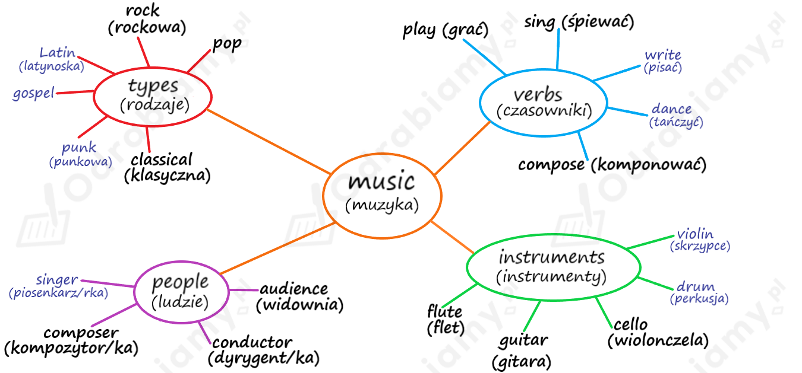

Poniżej przedstawiona jest przykładowa odpowiedź do tego zadania. Każdy uczeń może rozwiązać je w inny sposób. Poniższe rozwiązanie traktuj jako wzór, na podstawie którego stworzysz własną odpowiedź.
Rozwiązanie na obrazku:

Uwaga! Rozwiązanie przykładowe. Definicje (lub ich część) pochodzą ze słownika Cambridge Dictionary. Definicje mogą się różnić w zależności od wybranego słownika.
1. conductor - someone who directs the performance of musicians or a piece of music
(dyrygent/ka)
2. sing karaoke - sing the words to recordings of the music of popular songs
(śpiewać karaoke)
3. sound engineer - a person whose job is to be responsible for the technical features of the sound for a broadcast, performance, or recording
(realizator/ka dźwięku)
4. compose - to produce music, poetry, or formal writing
(komponować)
classical music - music that is considered to be part of a long, formal tradition and to have lasting value
(muzyka klasyczna)
composer - a person who writes music
(kompozytor/ka)
Poniżej przedstawiona jest przykładowa odpowiedź do tego zadania. Każdy uczeń może rozwiązać je w inny sposób. Poniższe rozwiązanie traktuj jako wzór, na podstawie którego stworzysz własną odpowiedź.
1. A famous conductor I know is Piotr Rubik. Famous DJs I know are Skrillex, Calvin Harris, and Alan Walker.
(Słynny dyrygent, którego znam to Piotr Rubik. Sławni DJ-e, których znam to Skrillex, Calvin Harris i Alan Walker.)
2. No, I have never sung karaoke. I've never really had the chance to try.
(Nie, nigdy nie śpiewałem/am karaoke. Nigdy tak naprawdę nie miałem/am okazji spróbować.)
3. A sound engineer is responsible for the technical features of the sound for a broadcast, performance, or recording.
(Realizator/ka dźwięku jest odpowiedzialny/a za techniczne cechy dźwięku w audycji, występie lub nagraniu.)
4. My favourite pieces of classical music were composed by Vivaldi and Mozart. I don't often listen to this type of music but I'm familiar with those composers.
(Moje ulubione utwory muzyki klasycznej zostały skomponowane przez Vivaldiego i Mozarta. Nieczęsto słucham tego typu muzyki, ale ci kompozytorzy są mi znani.)
1. DJ
2. sound engineer
3. conductor
Znaczenie zaznaczonych słów i wyrażeń:
rhythmical - rytmiczny
beats - rytmy, uderzenia
rhythms - rytmy
audience - słuchacze
repertoire - repertuar
boo - wygwizdywać, buczeć
cheer - wiwatować
sound system - nagłośnienie
amplifiers - wzmacniacze
speakers - głośniki
mikes - mikrofony
percussion - perkusja
amps - wzmacniacze
turn the volume up - zwiększyć głośność
noise-cancelling headphones - słuchawki wygłuszające
read music - czytać nuty
audition - przesłuchanie
cello - wiolonczela
trumpet - trąbka
flute - flet
rehearsals - próby
Uwaga! Wstawione odpowiedzi zostały pogrubione w tłumaczeniu.
1. repertoire
2. composer
3. classical
4. audience
5. cheers
Uzasadnienie: wstawiamy czasownik w formie past simple, ponieważ opisujemy sytuację, która jest z reguły prawdziwa. Dodajemy końcówkę -s, ponieważ słowo audience (widownia) traktujemy jako rzeczownik grupowy w l. pojedynczej.
Tłumaczenie:
David Garrett to światowej sławy skrzypek, w którego repertuarze znajduje się coś dla każdego miłośnika muzyki. Na jego albumach mieszają się różne rodzaje muzyki, w tym jego własna (jest również kompozytorem), klasyczna (np. Mozart) i nowoczesna (np. Coldplay czy Queen). Jego występy są pełne energii, a publiczność zawsze długo wiwatuje, prosząc o więcej.
Poniżej przedstawiona jest przykładowa odpowiedź do tego zadania. Każdy uczeń może rozwiązać je w inny sposób. Poniższe rozwiązanie traktuj jako wzór, na podstawie którego stworzysz własną odpowiedź.
Uwaga! Wstawione lub wybrane odpowiedzi zostały pogrubione w tłumaczeniu.
1. Stevie Wonder
(Uważam, że Stevie Wonder jest bardzo utalentowanym autorem piosenek.)
2. lots of
(Na moich listach odtwarzania jest dużo muzyki filmowej.)
3. The Witcher; computer game
(Mój ulubiony motyw muzyczny pochodzi z Wiedźmina, który jest grą komputerową.)
4. The Weekend; Dawn FM
(Lubię [zespół] The Weekend, który w zeszłym roku wydał popularny album o nazwie Dawn FM.)
5. rock; stream; Spotify
(Jestem wielkim fanem / wielką fanką muzyki rockowej, i często streamuję ją przez Spotify.)
Indywidualne
Poniżej przedstawiona jest przykładowa odpowiedź do tego zadania. Każdy uczeń może rozwiązać je w inny sposób. Poniższe rozwiązanie traktuj jako wzór, na podstawie którego stworzysz własną odpowiedź.
In the video still, there is a boy standing by the ocean or the sea. He's wearing a T-shirt and a hat, so I think it's quite warm. He's also wearing a backpack. He's holding some kind of equipment with his left hand. Perhaps it's a microphone or a recording device. I think he's trying to capture the sound of waves.
Tłumaczenie:
Na zatrzymanym filmiku widać chłopca stojącego nad oceanem lub morzem. Ma na sobie koszulkę i kapelusz, więc chyba jest dość ciepło. Ma też na sobie plecak. Lewą ręką trzyma jakiś sprzęt. Być może jest to mikrofon lub urządzenie nagrywające. Myślę, że próbuje uchwycić dźwięk fal.
1. Perhaps he needs it for his next song. Or maybe he's making an album featuring the sounds of nature.
(Być może potrzebuje tego do swojej kolejnej piosenki. A może tworzy album z dźwiękami natury.)
2. It's not very important but sometimes it can be interesting. Especially when you really enjoy a piece of music. Then it's natural you want to find out more about it.
(Nie jest to zbyt ważne, ale czasem może być ciekawe. Szczególnie, gdy jakiś utwór naprawdę ci się podoba. Wtedy to naturalne, że chcesz dowiedzieć się o nim więcej.)
3. Lots of musicians get inspired by their experiences. That's why there are a lot of songs about love and break-ups. A good source of inspiration for a musician can also be nature.
(Mnóstwo muzyków inspiruje się swoimi przeżyciami. Dlatego też powstaje wiele piosenek o miłości i rozstaniach. Dobrym źródłem inspiracji dla muzyka może być również natura.)
Poniżej przedstawiona jest przykładowa odpowiedź do tego zadania. Każdy uczeń może rozwiązać je w inny sposób. Poniższe rozwiązanie traktuj jako wzór, na podstawie którego stworzysz własną odpowiedź.
The career of a sound engineer seems the most interesting to me. I think it would be nice working with sound and equipment. However, it also might be a job that requires lots of travelling.
(Kariera realizatora/rki dźwięku wydaje mi się najciekawsza. Myślę, że fajnie byłoby pracować z dźwiękiem i sprzętem. Jednak może to być również praca, która wymaga dużo podróżowania.)